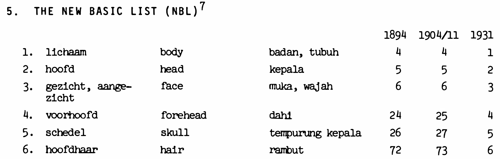
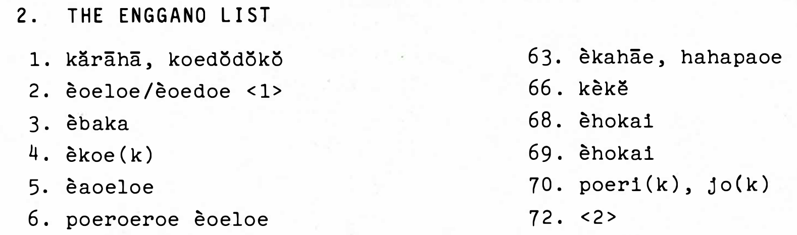

![]()
Code
library(tidyverse)
knitr::include_graphics("img/matching-master-list.png")
knitr::include_graphics("img/matching-enggano-list.png")


Advances in cloud computing, as well as computational tools for extracting text from images, offer an opportunity to scale up the development of digital databases for Indigenous languages. This paper reports on the application of these advances to the digitalisation of old, paper-based lexical items of over a hundred Indigenous languages in Indonesia; these items are part of the so-called Holle List (HL). After introducing the (structure of the) HL, the paper underlines the motivation for the HL digitalisation project. It then provides an overview of Google Colab as a free cloud-computing platform for executing a series of optical character recognition (OCR) operations on hundreds of scanned pages of the HL, utilising pytesseract, a Python interface for Google’s Tesseract-OCR engine. Advantages (e.g., computational searchability and manipulability), as well as issues (especially typos and unrecognised characters) in the plain-text OCR outputs, are discussed. In conclusion, the paper highlights the importance of digital technology in conserving Indigenous languages via digital platforms, despite some unavoidable challenges that require human intervention.
Holle List, Indigenous Indonesian languages, Digital Humanities, Lexical databases, Linguistics, Data Science
This paper1 reports on a Digital Humanities (Drucker, 2021) project of digitalising and curating large volumes of word lists, the so-called Holle List vocabulary. The Holle List project was initiated in the late 19th century by Karel Frederik Holle, a Dutch colonial administrator. His aim was to gain knowledge about the linguistic situation of the Dutch East Indies, corresponding to the present-day state of Indonesia. In the first edition of the Holle List (Holle, 1894), K. F. Holle set up a list of elicitation concepts (i.e., 905 concepts to be exact) given in Dutch (Holle, 1894, pp. 8–38). This list was distributed throughout the Indonesian archipelago. The goal was to collect the corresponding expressions/words of these elicited concepts (from various semantic domains) across more than two hundred indigenous regional language varieties in Indonesia.
Between 1980 and 1987, W. A. L. Stokhof and colleagues (viz. Lia Saleh-Bronckhorst and Alma E. Almanar) edited, collated, and published (i) the different versions of the reference/master, elicitation Holle List as well as (ii) the corresponding expressions/words in the regional language-varieties into an eleven-volume publication series2. These publications are available as open access under the Creative Commons License (see Figure 2 in § 2.1). These publications consist of two main parts. The first one is the volume containing just the reference (or master) Holle List (Stokhof, 1980), comprising elicitation concepts given in Dutch, English, and Indonesian/Malay together with their index numbers (see Figure 1 (a)); this is called The New Basic List (hereafter NBL) in Stokhof (1980) because Stokhof and colleagues collated three different versions of the Holle List (namely those published in 1894, 1904/1911, and 1931; see Figure 1 (a)). The second part of the Holle List publications is the separate volumes containing the expressions/words of the regional language-varieties and their index numbers (see Figure 1 (b) for an example from the Enggano language); these index numbers for words in the regional language-varieties correspond to the index numbers of the concepts in the reference Holle List/NBL. It is important to note that there is only one volume of the NBL; the content of the NBL is not repeated in the remaining volumes for the expressions/words in the regional language-varieties, but only the index numbers.
In the above two-part publication setup, linguists, who are interested in the Dutch, English, and Indonesian/Malay translations of a given word in a given regional language, must manually match the index number of that regional word with the corresponding index number in the reference Holle List. Let us use the data snippet in Figure 1 as an example.
library(tidyverse)
knitr::include_graphics("img/matching-master-list.png")
knitr::include_graphics("img/matching-enggano-list.png")Consider the Enggano word èbaka (ID number 3 in Figure 1 (b)). To understand what the word refers to in Dutch, English, and Indonesian/Malay, one must look up the ID number 3 in the separate NBL publication (Figure 1 (a)). In this case, èbaka in Enggano refers to ‘gezicht, aangezicht’ in Dutch, ‘face’ in English, and ‘muka, wajah’ in Indonesian/Malay. Alternatively, from the perspective of the NBL, linguists could have asked how a given concept is lexicalised in a given language. For example, the concept of ‘lichaam’ or ‘body’ in English (and ‘badan, tubuh’ in Indonesian) (ID number 1 in the NBL) can be lexicalised by two forms in Enggano, as shown by those given for the ID number 1 in the Enggano list, viz. kărāhā and koedŏdŏkŏ (cf. Table 3 and Table 4).
With such paper-based, separate arrangement between words in the regional language-varieties and their translations, one could imagine the amount of manual back-and-forth procedure needed to link the words and their translations. The development of modern data science (Donoho, 2017) allows us to navigate such a problem predominantly in a computational manner. The Holle List setup can be conceived as disjointed relational data with common keys; these shared keys are the index numbers present in both datasets (the NBL and the given regional list). Then, they can be computationally joined at scale once they are both in computer-readable format (see Wickham et al., 2023, Ch. 19, for the description of table-joining and its computational implementation in the R programming language).
In order to tackle the problem of manual matching, with a desideratum for computational matching between the NBL and the regional lists, the PDF file containing the NBL table (Stokhof, 1980) has been digitalised. The NBL is now available as a computer-readable, searchable, and manipulable database (Rajeg, 2023b); this is also available online as a webpage at https://engganolang.github.io/digitised-holle-list/. The joining of the translations in the digitalised NBL into the regional list data is via the matching keys, viz. the index numbers. This digitalised NBL (in a tab-separated plain-text file) has first been implemented in joining (i) the (also digitalised) regional word list for Enggano with (ii) the corresponding Dutch, English, and Indonesian glosses in the master Holle List (Rajeg, 2023a; Rajeg et al., 2025).
Building on the Enggano research, the current project envisages computational matching between the NBL and all words from the remaining regional languages in the Holle List. To achieve this, the first step is to digitalise the other regional languages from the PDF files into plain texts. Since there are more than one hundred regional lists (comprising ten volumes) in the Holle List, we need to scale-up the digitalisation process.
This paper leverages a cloud computing platform, that is “Google Colaboratory” (https://colab.google/) (Google, 2026), to handle the computational resources (such as the Central Processing Unit and Memory) to run a large-scale digitalisation process of many PDF files into plain-text file. The software that performs the remediation from PDF to plain text is the Tesseract O(ptical) C(haracter) R(ecognition) engine (Smith, 2007) (see § 2.2 for further details). Once the digitalisation output of the regional lists has been checked, edited for errors (cf. § 4 esp. in Table 2), and tagged to separate each language in the source PDF file (Figure 11), it is possible to computationally collate what was two-parts paper-based publications into a digital cross-linguistic lexical database in which the words in the regional languages are matched with their corresponding Dutch, English, and Indonesian/Malay glosses (cf. Table 3).
The future potentials of these large lexical data are diverse. It will open new possibilities for systematic computational historical linguistic analysis in finding relationships between languages (Lai & List, 2023). The database can also be used to study diachronic changes of the same language, combining older datasets with present-day datasets (where available) (Krauße et al., 2024; Rajeg et al., 2024). In the area of lexical semantics, the database could be used to investigate collexification patterns (François, 2008; Rzymski et al., 2020) (Table 3, Table 4). Last but not least, the database contributes to the preservation and empowerment of Indonesian regional languages, especially the older varieties, in the digital realm, corresponding to UNESCO’s Digital Initiatives for Indigenous Languages (Llanes-Ortiz, 2023).
This section covers two main points. First, accessing the scanned Holle List publications in PDFs (§ 2.1). Second, the computational processing (i.e., the coding components) on Google Colab to remediate these PDFs into text files (§ 2.2).
The PDF files for all eleven volumes of the Holle List series are available as open access on the Open Research Repository of the Australian National University (ANU) library, under the “ANU Asia-Pacific Linguistics/Pacific Linguistics Press” collection. The Holle List publications can be looked up using “Holle Lists” as the search term (see Figure 2).
The PDF file for every volume was downloaded and uploaded onto the Google Drive of the Holle List project so that it can be accessed during processing in the Google Colab coding environment. This is explained next.
To use Google Colab, one only needs to sign up for a Google Account (if they do not already have one). After signing-in to one’s Google Account, go to https://colab.google/ and choose the New Notebook option. A computational Jupyter Notebook will be created and stored in the Google Drive folder. This Notebook runs the Python programming language (see Figure 3). All computations for the digitalisation happened on this online, cloud computer on Google Colab.
The codes shown in Figure 3 are for installing relevant software in the remediation process from PDF into plain text. The Tesseract OCR engine (see the code !sudo apt install tesseract-ocr) as well as the Python package/module pytesseract (Hoffstaetter, 2024) were installed to allow access to Tesseract via Python. Before converting the PDF into plain text with the pytesseract, the PDF files must first be converted into images using the pdf2image module (Belval, 2024).
The next step is to load the necessary functionality from the installed modules for PDF-to-text conversion, including a function that allows access to the downloaded PDFs stored on Google Drive (cf. Figure 2). This is shown in Figure 4.
After loading the relevant functions by executing codes in Figure 4, we need to write custom Python codes for the digitalisation processes. An example is shown in Figure 5 for the processing of the regional Holle List vol. 5/1 for the Papuan and Austronesian languages in the Digul Area, Irian Jaya/West Papua, Indonesia (Stokhof et al., 1982).
Codes in the upper code block/box in Figure 5 deal with converting the PDF into images by providing the Google Drive path of the PDF.
After that come the codes in the lower code block/box in Figure 5. They cover three aspects. First, setting up the parameters or configuration for the output format of the plain text. Details can be found at https://tesseract-ocr.github.io/tessdoc/Command-Line-Usage.html. Second, creating the main processing iteration to convert the images into a single text file. This is shown from the code line containing for i, image in enumerate(images): up until the line stating full_text += "\n\n". Finally, saving the output into a plain text file; this file is stored on a Google Drive folder specified by the user. The code line shown in Figure 5 indicates that the output is saved with the file name HolleList-Vol-5-1-Irian-Jaya.txt under a folder for the Vol. 5/1, which is in turn inside the hollelist sub-folder in my main Google Drive folder (MyDrive) (see Figure 6).

Note that writing the codes as presented in Figure 5 does not necessarily mean that the codes are automatically executed/instructed to produce the output. To run the codes inside a given code block, hover the cursor in the top-left area of the code block until a white rightward arrow (with black background) appears (see the point of the blue arrow in Figure 7), then click on that white arrow.
Alternatively, ensure the cursor is in the relevant code block and then use the keyboard shortcut Ctrl+Enter to execute the codes in that code block.
As mentioned in § 1, the execution of these codes is not performed locally on our laptop but online on the cloud, using the Central Processing Unit (CPU) and memory provided by Google Colab. It is also important to note that the conversion processes from image files into plain texts for a given volume could take more than one hour. In this study, the processing times for digitalising each volume were not recorded because the primary goal is not to assess the efficiency and processing times.
This section presents two sets of results from a single Holle List volume, namely vol. 5/1 (Stokhof et al., 1982) for Austronesian and Papuan languages in the Digul area, Irian Jaya (West Papua), Indonesia. They were chosen to illustrate differences in the quality of the conversion output, depending on the nature of the input characters in the source PDF file. These two sets represent two different languages in that volume, namely Numfor (Stokhof et al., 1982, p. 17) and Digul Mappi (spoken in the area between the Digul River and the Mappi River) (Stokhof et al., 1982, p. 133).
Figure 8 (a) captures several words in Numfor in the PDF source file while Figure 8 (b) shows their corresponding OCR conversion output in plain-text.
knitr::include_graphics("img/numfor-pdf.png")
knitr::include_graphics("img/numfor-txt.png")The pair in Figure 8 can now be contrasted with that for the Digul Mappi list in Figure 9.
knitr::include_graphics("img/digul-mappi-pdf.png")
knitr::include_graphics("img/digul-mappi-txt.png")In § 4, these results will be discussed, tailored with a recent data publication of the Holle List vol. 10/3 (Stokhof & Almanar, 1987) when the master NBL has been joined with the regional words into a digital database.
Careful inspection of the result snippets in Figure 8 and Figure 9 reveal differences in output quality. The words shown for Numfor consist of standard alphabetic characters without diacritics. The OCR output for these words appears correct and closely resembles the source PDF without the need to edit them. In addition, the index numbers are rendered correctly.
Let us now contrast that result with that for Digul Mappi in Figure 9. The Digul Mappi words contain accented characters (i.e., those with diacritics). For example, the word for ‘body’ (ID no. 1) is wòssò in Digul Mappi. The OCR engine did not render or convert the character ò correctly. Hence, from wòssò (original) into wdssd in the OCR output (Figure 9 (b)). A quick look at some other words containing ò in the list in Figure 9 (a) suggests that these combined characters (o + ◌̀) are rendered into d:
tibble::tribble(~`Source PDF`, ~`Holle ID`, ~`OCR output`,
"_chabãnj**ò**_ ‘hair’", 6, "_chabanj**d**_",
"_soet**ò**_ ‘ear’", 9, "_soet**d**_",
"_soet**ò**t**ò**_ ‘earwax’", 10, "_soet**d**t**d**_",
"_k**ò**koe_ ‘belly’", 54, "_k**d**koe_",
"_intaki**ò**_ ‘side’", 60, "_intaki**d**_",
"_**ò**goe_ ‘navel’", 61, "_**d**goe_"
) |>
dplyr::relocate(`Holle ID`, .before = `Source PDF`) |>
tidyr::separate_wider_regex(cols = `Source PDF`,
patterns = c(`Source PDF` = "^[^ ]+",
" ",
Gloss = "[^ ]+")) |>
dplyr::relocate(Gloss, .after = `Holle ID`) |>
knitr::kable()| Holle ID | Gloss | Source PDF | OCR output |
|---|---|---|---|
| 6 | ‘hair’ | chabãnjò | chabanjd |
| 9 | ‘ear’ | soetò | soetd |
| 10 | ‘earwax’ | soetòtò | soetdtd |
| 54 | ‘belly’ | kòkoe | kdkoe |
| 60 | ‘side’ | intakiò | intakid |
| 61 | ‘navel’ | ògoe | dgoe |
With such a pattern from the snippet of the data in Table 1, we might assume that all other occurrences of ò will be rendered as d. With that assumption, and to expedite correction, we might also be tempted to perform a global find-and-replace procedure: replacing all occurrences of d with ò. However, the assumption is not fully supported and a one-time find-and-replace procedure is probably not ideal.
Consider another word in Figure 9 (a) referring to ‘navel’ (ID no. 61), namely mòṙěkiò. The OCR output of this word shows that the two ò-s inside it are rendered differently: as o in the first syllable and as d in the penultimate syllable. What is more, d is not only the OCR rendering for ò in the original PDF, but also for the second à in the word àssiàběgǐ (ID no. 67) ‘buttocks’; this word is rendered as Assidbégi in the OCR output (Figure 9 (b)).
With all these issues, the OCR output from image to text requires further manual verification and correction. Nevertheless, computational remediation from image to text on the cloud with Tesseract lets us obtain computationally searchable text data relatively quickly, rather than typing manually (cf. below). As we have seen from Figure 8, typically the conversion works well for simple characters (i.e., without diacritics or without other formatting, like underscore). This means that we reduce the time and effort to re-type (or manually type) these well-recognised characters, with effort focused primarily on verifying accented characters3.
Even if we decided that we would perform the digitalisation task through manual typing, the result of the typing still needs further manual checking and editing for human error and/or inconsistencies. This is what was done for an on-going digitalisation work of the Holle List for the remaining Barrier Islands Languages4 (other than Enggano), off the west coast of Sumatra (Rajeg & Arka, 2024/2025; Stokhof & Almanar, 1987). The results from students’ group project5 (Rajeg & Arka, 2025) to digitalise these lists as an introduction to WeSay were first processed, combined, and then manually checked on Google Spreadsheet for tracking changes (cf. Fomin & Toner, 2006, p. 84).
Table 2 shows how tracking changes are organised as a table. The regional lexical items that were manually typed by students (lx_all column) are in a separate column from that containing the corrected forms (called lx_all_correct). The ID column refers to the Holle List index number and a separate column for its correction is also provided but not shown here.
# maindb <- googlesheets4::read_sheet(ss = "https://docs.google.com/spreadsheets/d/1P-JontDvH4MjKZ4pdqxthjTovSajJLKX6y2rtpuO5sc/edit?usp=sharing",
# col_types = c("cccccccccccicccccccccccccccllcccccccccccccc"),
# na = "NA")
# maindb |>
# dplyr::select(lang_name, ID, lx_all, lx_all_correct) |>
# dplyr::mutate(is_corrected = ifelse(lx_all_correct == "",
# FALSE,
# TRUE)) |>
# readr::write_tsv("data/maindb_correction_data.tsv")
# correction_sample <- readr::read_tsv("data/maindb_correction_data.tsv") |>
# dplyr::filter(!is.na(lx_all_correct)) |>
# dplyr::filter(!grepl("^add_", ID, perl = TRUE)) |>
# dplyr::filter(grepl("^\\d+$", ID, perl = TRUE)) |>
# dplyr::filter(!grepl("^\\d", lx_all, perl = TRUE)) |>
# dplyr::filter(!grepl("\\s", lx_all_correct, perl = TRUE)) |>
# dplyr::select(-is_corrected) |>
# dplyr::slice_sample(n = 1, by = lang_name)
# correction_sample |>
# readr::write_tsv("data/correction_sample.tsv")
read.table(file = "data/correction_sample.tsv", header = TRUE,
sep = "\t", quote = "", comment.char = "") |>
knitr::kable()| lang_name | ID | lx_all | lx_all_correct |
|---|---|---|---|
| salangsigule | 1259 | nifeu-eu | nifieu-eu |
| semalur | 1060 | mamboeïh | mamboeǐh |
| sigulesalang | 1429 | adénaěn | adénaĕn |
| nias1905 | 824 | onorafati | onarafati |
| nias1911 | 912 | dofi | dôfi |
| mentawai_nd | 536 | goêlai | go͡elai |
With that correction set-up, we can (i) compare the original and the edited version, as well as, (ii) for each language, quantify the proportion of manually entered items requiring correction versus those that are already correct. Such a quantification is visualised in Figure 10.
readr::read_tsv("data/maindb_correction_data.tsv") |>
dplyr::count(lang_name, is_corrected) |>
dplyr::group_by(lang_name) |>
dplyr::mutate(perc = round(n/sum(n) * 100, 1)) |>
dplyr::arrange(lang_name, dplyr::desc(n)) |>
ggplot2::ggplot(ggplot2::aes(x = lang_name, y = perc,
fill = is_corrected)) +
ggplot2::geom_col() +
ggplot2::geom_text(ggplot2::aes(label = n),
vjust = 1) +
ggplot2::labs(y = "percentage",
x = "language label",
fill = "is corrected?",
caption = "Raw frequencies are numbers inside the bars")Once the word list has been in digital form and corrected, they can be joined with their translations from the reference Holle List (or the New Basic List) (cf. § 1). Then, we can explore and computationally search across a set of languages (e.g., from a given volume of the Holle List) how a certain concept is expressed in these languages. An illustration will be given for languages of the Barrier Islands in Sumatra, Indonesia, whose manual digitalisation work has nearly been completed (pending further work for orthography standardisation and phonemic transliteration). Another example is given for languages of Kalimantan where the Tesseract OCR output can be processed computationally which is not feasible in PDF format.
# set wd to main holle list barrier islands
# setwd("C:/Users/GRajeg/OneDrive - Nexus365/Documents/Research/barrier-island-Holle-list-2023-05-24/")
# wl_files <- dir("C:/Users/GRajeg/OneDrive - Nexus365/Documents/Research/barrier-island-Holle-list-2023-05-24/data-output", pattern = ".tsv", full.names = TRUE)
#
# lang_name <- str_replace_all(basename(wl_files), "(\\.tsv|_tb)", "")
#
# db <- map(wl_files, read_tsv) |>
# map(~select(., -1)) |>
# map2(.y = lang_name, \(x, y) mutate(x, lang_name = y)) |>
# map(~mutate(., `v1931` = as.character(`v1931`))) |>
# map(~relocate(., lang_name, .before = Index))
#
# names(db) <- lang_name
#
# factor_order <- c("lekon", "tapah", "simalur", "seumalur1912", "sigule_salang1912", "salang_sigule1920", "mentawai_nd", "mentawai1933", "nias1905", "nias1911")
enggano <- readr::read_csv("https://raw.githubusercontent.com/engganolang/holle-list-enggano-1895/refs/heads/main/cldf/forms.csv")
enggano2 <- enggano |>
select(Index = Holle_ID,
Forms = Value,
English, Indonesian) |>
mutate(lang_name = "enggano")
# words meaning land and land as a state
# db |>
# map(~filter(., list_type == "NBL")) |>
# map(~filter(., str_detect(Index, "^94[23]"))) |>
# map(~select(., !matches("^nt_"))) |>
# list_rbind() |>
# select(lang_name, Index, Forms, English) |>
# mutate(lang_name = factor(lang_name, levels = factor_order)) |>
# arrange(lang_name, Index, Forms) |>
# distinct() |>
# write_rds("data/land.rds")
db_land <- read_rds("data/land.rds") |>
bind_rows(enggano2 |>
filter(str_detect(Index, "^94[23]")) |>
select(-Indonesian))
db_land |>
knitr::kable()
# return
# setwd("C:/Users/GRajeg/OneDrive - Nexus365/Documents/Research/snbi2026-holle-list")| lang_name | Index | Forms | English |
|---|---|---|---|
| lekon | 942/943 | angkal | land [ID_942]; land (state) [ID_943] |
| tapah | 942/943 | angkal | land [ID_942]; land (state) [ID_943] |
| simalur | 942/943 | angkal | land [ID_942]; land (state) [ID_943] |
| seumalur1912 | 942 | banoh | land |
| seumalur1912 | 943 | negri | land (state) |
| sigule_salang1912 | 942/943 | banoewàˈ | land [ID_942]; land (state) [ID_943] |
| salang_sigule1920 | 942/943 | taneu | land [ID_942]; land (state) [ID_943] |
| mentawai_nd | 942 | kapi | land |
| mentawai1933 | 942 | boeggei | land |
| nias1905 | 942 | tano̠ | land |
| nias1905 | 943 | banoea | land (state) |
| nias1911 | 942 | reli danô | land |
| nias1911 | 942 | tanô | land |
| nias1911 | 943 | banoea | land (state) |
| nias1911 | 943 | ôri | land (state) |
| nias1911 | 943 | tanô | land (state) |
| enggano | 942 | ijokie | land |
| enggano | 943 | èlŏpŏ | land (state) |
Table 3 illustrates the joint database from the Barrier Islands Languages in the Holle List, filtered specifically for word-forms expressing the concept of LAND literally (ID 942) and metaphorically as a state (ID 943). It can be seen, for example, that Lekon, Tapah, and Simalur colexify (François, 2008, p. 170; 2022, p. 95) the concept of LAND as a physical landscape and as a state with a single form, namely angkal. Then, the two Sigule and Salang lists from two different periods of collection and publications also colexify these two concepts using two different forms in these two periods. Other languages, such as Nias, mainly distinguish between land as a physical landscape and land as a state. But, an interesting observation can be made about Nias as well. While in Nias 1905 data the form tano̠ as well as its 1911 given form tanô, only refers to land literally (ID 942), the same form in 1911 (tanô) can also refer to land as a state; this might suggest a semantic extension of cognates for land as a physical landscape in diachronic varieties of Nias. This assumption needs further verification.
The OCR output in plain-text format from running the Tesseract engine (§ 2.2) can also be computationally (via programmatic coding) processed and searched for certain word forms. Before doing this, the output needs to be manually tagged for the language boundary in the text (see the yellow-highlighted line 120 in Figure 11). That is, which part of the output belongs to which language in the original PDF so that computationally we can write code to detect which form belongs to which language.
knitr::include_graphics("img/borneo-lang-tag-01.png")Once all languages in a volume have been tagged as in Figure 11, a programmatic script in R or Python can be designed to process and access the text file. Table 4 shows the tabular output of extracting (with programmatic edit of the OCR output) word forms referring to land as a landscape (ID 942) and/or as a state (ID 943) in the Holle List for languages of Borneo/Kalimantan (Stokhof & Almanar, 1986).
# read_lines("https://raw.githubusercontent.com/Holle-List/holle-list-vol8-kalimantan/refs/heads/main/raw/PL-D69_Holle_List_Vol_8_Kalimantan-Borneo.txt") |>
# write_lines("data/vol8.txt")
# borneo <- read_lines("data/vol8.txt")
# grp_start <- str_which(borneo, "\\<group xml\\:lang")
# grp_end <- str_which(borneo, "\\<\\/group\\>")
# borneo_split <- map2(grp_start, grp_end, \(x, y) borneo[x:y])
# names(borneo_split) <- borneo_split |> map_chr(`[`, 1) |> str_extract("(?<=xml\\:lang\\=\").+(?=\" xml\\:id)")
#
# borneo_split |>
# map(~str_subset(., "\\b942|\\b943")) |>
# write_rds("data/borneo_split.rds")
borneo_land <- read_rds("data/borneo_split.rds") |>
map(~str_replace(., "943. 1€p6'", "943. lěpo̊'")) |>
map(~str_replace(., "942\\/", "942\\/943. tanah")) |>
map(~str_replace(., "^943\\. tanah$", "")) |>
map(~str_subset(., "\\b942|\\b943")) |>
map(~str_extract(., "(\\b942\\/943\\b.\\s[^ ]+?(\\b| )|\\b94[23]\\b.\\s[^ ]+?(\\b| ))")) |>
unlist()
borneo_no_land <- read_rds("data/borneo_split.rds") |>
map(~str_replace(., "943. 1€p6'", "943. lěpo̊'")) |>
map(~str_replace(., "942\\/", "942\\/943. tanah")) |>
map(~str_replace(., "^943\\. tanah$", "")) |>
map(~str_subset(., "\\b942|\\b943")) |>
map(~str_extract(., "(\\b942\\/943\\b.\\s[^ ]+?(\\b| )|\\b94[23]\\b.\\s[^ ]+?(\\b| ))")) |>
map(\(x) x[identical(x, character(0))]) |>
unlist() |>
names() |>
str_to_title()
borneo_land_to_print <- tibble(lang_name = names(borneo_land), Forms = borneo_land) |>
mutate(lang_name = str_to_title(lang_name)) |>
mutate(lang_name = str_replace(lang_name, "\\d$", "")) |>
mutate(Forms = if_else(lang_name == "Katingan Dayak", str_replace(Forms, "^943\\. p.tak", "942/943. pètak"), Forms)) |>
bind_rows(tibble(lang_name = "Kenyah Dayak", Forms = "942. tǎnà'")) |>
separate_wider_regex(Forms, c(Index = "^[^ .]+", "\\. ", Forms = ".+"))
additional_row <- borneo_land_to_print |>
slice(nrow(borneo_land_to_print))
row_1_tgt <- borneo_land_to_print |>
slice(1:7)
row_rest <- borneo_land_to_print |>
slice(8:10)
borneo_land_to_print <- bind_rows(row_1_tgt,
additional_row,
row_rest)
borneo_land_to_print |>
# arrange(lang_name, Forms) |>
knitr::kable()| lang_name | Index | Forms |
|---|---|---|
| Ot Danum Dayak | 942 | tana |
| Banjar | 942 | daratan |
| Ngaju Dayak | 942 | petak |
| Katingan Dayak | 942/943 | pètak |
| Maanyan | 942 | tanae |
| Maanyan | 943 | tanae |
| Ulu Malay | 942 | daratan |
| Kenyah Dayak | 942 | tǎnà’ |
| Kenyah Dayak | 943 | lěpo̊ |
| Penihing Dayak | 942/943 | tanah |
| Dialect Spoken In The West Kutei | 942 | darat |
It is important to mention that not all languages/varieties represented in the Holle List vol. 8 for Kalimantan contain forms referring to the concept of LAND in ID 942 and 943 (i.e., our programmatic search returned null results for these varieties with respect to these two IDs). These varieties are Martapura, Sekajang Dayak, Language Spoken In Matan, Unidentified (Semitau?). The reasons why they are not attested need further investigation.
This paper reports on a project to digitalise the scanned PDF files of eleven volumes of the Holle List vocabulary (Stokhof, 1980) into plain texts that are both computationally searchable and manipulatable. The computational tools (the Tesseract OCR engine and its Python implementation) and resources (the Google Colab) used to achieve that have been discussed (§ 2). The aim here is to demonstrate how a paper-based, disjointed set of information relevant to the Humanities, especially Indigenous language preservation, can be re-conceptualised and re-mediated digitally for further uses. The issues arising from the automatic OCR output (§ 4) as well as from the manual typing of the list (Table 2) have also been described. We hope to have provided simple illustrations of the potential that the cross-linguistic database could offer once it is fully prepared in computer-searchable, digital format. One linguistic example that is presented is how the semantic concept of LAND as a physical landscape and as a state is lexicalised in languages of the Barrier Islands, Sumatra (vol. 10/3 in Stokhof & Almanar, 1987) (Table 3) and of the Kalimantan (Borneo) region (vol. 8 in Stokhof & Almanar, 1986) (Table 4). One caveat is that the regional language data in the Holle List represent the state of the language investigated circa the late 19th century and/or early 20th century. Other intricacies include variation of orthography/spelling between investigators of different languages and the need to standardise the Dutch orthography (e.g., the use of oe to refer to /u/), which is the future desideratum of this project.
This is a webpage version of the same paper I have submitted and presented (on 20 February 2026) at the Seminar Nasional Bahasa Ibu (SNBI) XVII 2026 (The Eighteenth National Seminar on Mother Language 2026) organised by the Linguistics Master’s Program, Faculty of Humanities, Udayana University. Some of the works reported here (especially the digitalisation of the main, reference Holle List, the New Basic List, the Enggano Holle List, and some languages of the Barrier Islands, Sumatra), have been initiated when the author was a postdoctoral researcher at the University of Oxford, UK (2023-2025), working on developing lexical resources for Enggano, funded by the Arts and Humanities Research Council (AHRC), UK (AH/W007290/1).↩︎
See these Holle List publication series on this page.↩︎
At the moment, all OCR outputs for the Holle List are still in private repository of the Holle List GitHub (https://github.com/Holle-List) because the results need manual checking and editing.↩︎
This work (i) continues a previous digitalisation sub-project of the Enggano Holle List (funded by the Arts and Humanities Research Council [Grant ID: AH/W007290/1] led by the University of Oxford, UK) and (ii) is now part of the Australian Research Council (ARC) research (Grant ID: DP230102019) on Languages of Barrier Islands in Sumatra, Indonesia (led by the Australian National University in Canberra, Australia).↩︎
The list of the students’ names contributing to this work and the languages they work on is available at https://github.com/complexico/lexico-holle-list-barrier-islands?tab=readme-ov-file#student-contributors. They are also listed as the co-authors for the data publication for each language; access this information at https://github.com/complexico/holle-list-barrier-islands?tab=readme-ov-file#updates-from-students-contributions↩︎
@inproceedings{rajeg2026,
author = {Rajeg, Gede Primahadi Wijaya},
title = {The {Digitised} {Holle} {List} {Project:} {Building} a
{Database} from {Legacy} {Materials} for {Conserving} {Indigenous}
{Indonesian} {Languages}},
version = {1.0.0},
date = {2026-02-03},
eventdate = {2026-02-20},
langid = {en},
abstract = {Advances in cloud computing, as well as computational
tools for extracting text from images, offer an opportunity to scale
up the development of digital databases for Indigenous languages.
This paper reports on the application of these advances to the
digitalisation of old, paper-based lexical items of over a hundred
Indigenous languages in Indonesia; these items are part of the
so-called {[}Holle List (HL){]}(http://hdl.handle.net/1885/144430).
After introducing the (structure of the) HL, the paper underlines
the motivation for the {[}HL digitalisation
project{]}(https://portal.sds.ox.ac.uk/projects/Digitised\_Holle\_List/259172).
It then provides an overview of *{[}Google
Colab{]}(https://colab.research.google.com/)* as a free
cloud-computing platform for executing a series of optical character
recognition (OCR) operations on hundreds of scanned pages of the HL,
utilising
*{[}pytesseract{]}(https://pypi.org/project/pytesseract/)*, a Python
interface for *{[}Google’s Tesseract-OCR
engine{]}(https://github.com/tesseract-ocr/tesseract)*. Advantages
(e.g., computational searchability and manipulability), as well as
issues (especially typos and unrecognised characters) in the
plain-text OCR outputs, are discussed. In conclusion, the paper
highlights the importance of digital technology in conserving
Indigenous languages via digital platforms, despite some unavoidable
challenges that require human intervention.}
}